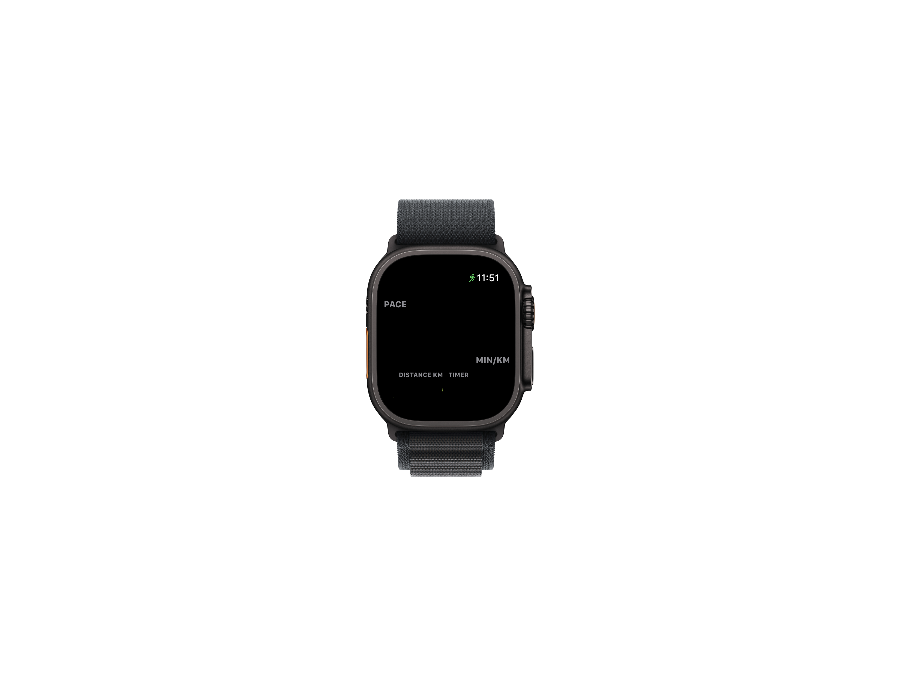
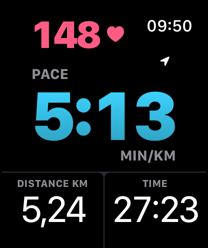

OUTDOOR
Record your run with GPS. See your route after finishing, with a trace colored by relative pace. Save the workout and available route data to Apple Health.
APPLE WATCH FIRST
The numbers you need, large enough to read in stride. Your pace, your heart rate, your run. Right there on your wrist.
For Apple Watch · watchOS 26 or later
Companion app for iPhone · iOS 26 or later


01 / THE DISPLAY
One glance should be enough. Give your main metric the room it deserves, with heart rate above and distance and time below.
Choose current pace, average pace, or heart rate as your main metric. Tap the main value to cycle pace views. Double Tap works on supported watches, too.
Choose the metrics, colors, and text weights on your watch or in the iPhone companion app. Hide the top row to make the main value even larger.
Your layout syncs between iPhone and Apple Watch. Once set, leave the phone behind. Runner records your run on the watch.
02 / WHERE YOU RUN
Record your run with GPS. See your route after finishing, with a trace colored by relative pace. Save the workout and available route data to Apple Health.
Let the watch’s motion sensors track distance and pace. No GPS or route recording indoors. The same clear display, wherever you put in the work.
Hold OUTDOOR or INDOOR on the watch start screen to switch modes.
03 / THE METRICS
Workout recording and the core metrics are free. Add more detail with All Metrics, an optional one-time purchase in the iPhone app.
About All MetricsAlso includes future premium metrics. No subscription. Purchase and restore through Apple on iPhone.
04 / YOUR DATA
No account. No ads. No analytics. Runner processes your workout on Apple Watch and saves it to Apple Health with your permission. No health or location data is sent to FLR Group.
Read the privacy policy